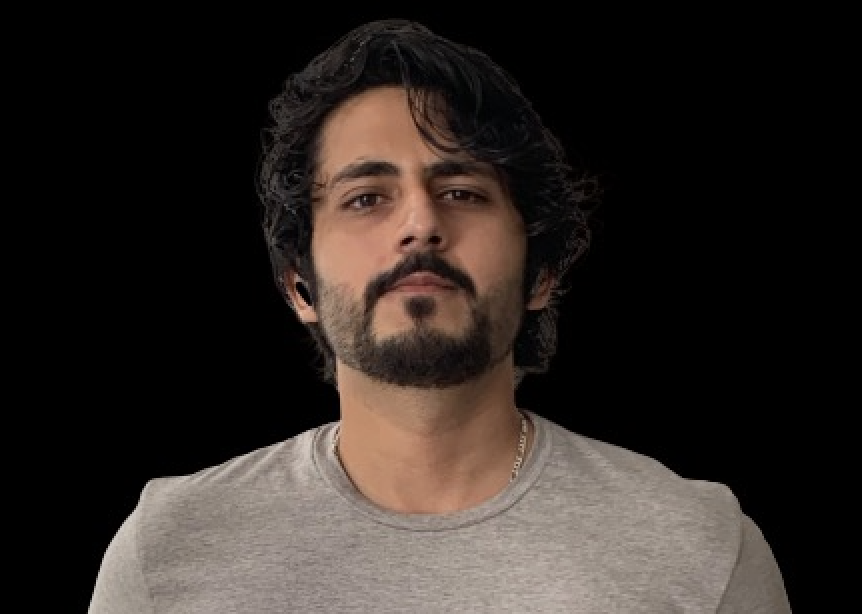

|
 |
Kartik Hans
Data Integration Engineer
|
Past Affiliations
- Nov 2021 - Aug 2022: Data Engineer at Goldcast, Bengaluru IN.
- Dec 2020 - Nov 2021: Machine Learning Engineer at Bright Money, Bengaluru IN.
- Dec 2018 - Jan 2019: Research Intern at Johns Hopkins University, Baltimore USA.
- Jul 2016 - May 2020: UnderGrad student at the Department of Electrical Engineering, IITD
Research Interests
Algorithms: particularly Graph Algorithms.Algorithm design and analysis.
Distributed Systems and Parallel Computing.